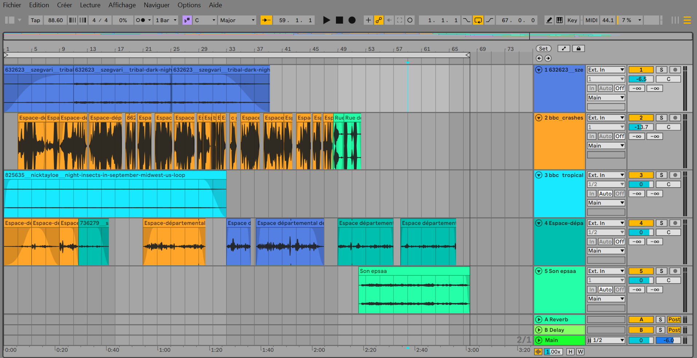
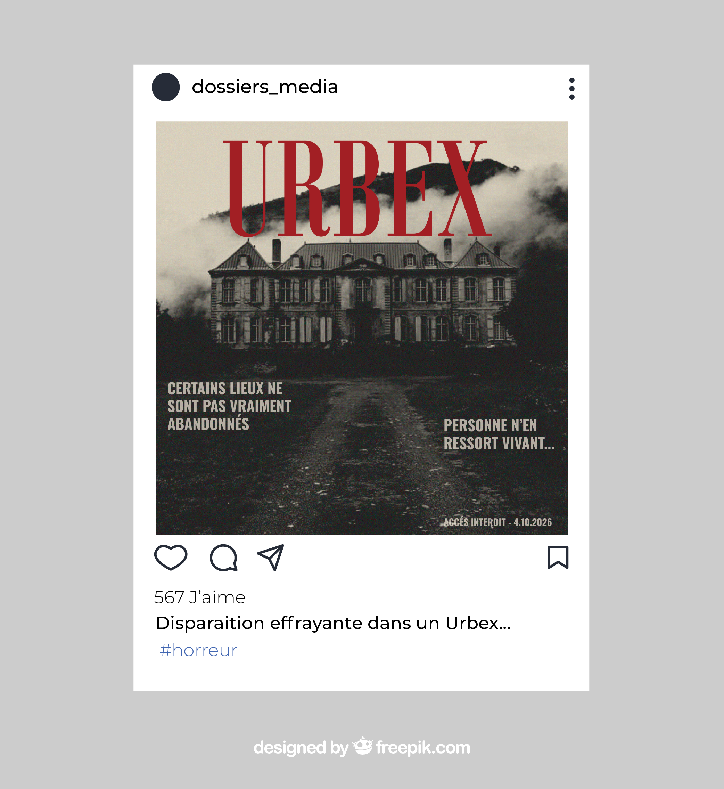
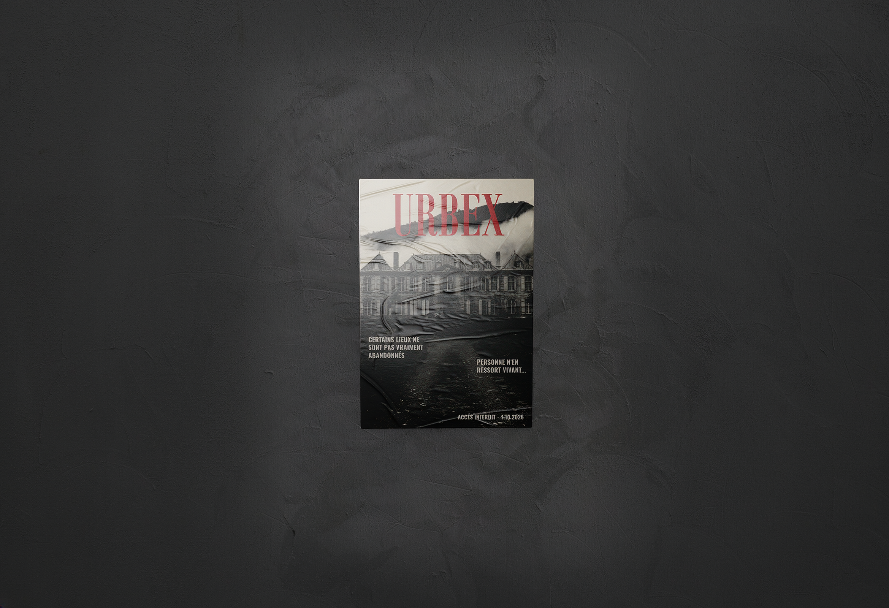

Projet sonore
Ce projet réalisé en groupe est une création sonore basée sur la fiction retraçant l’exploration en urbex d’une grande maison. Nous avons cherché à créer une mise en tension qui s’installe progressivement. La disparition soudaine de l’une d’elles fait basculer le morceau de la curiosité vers l’angoisse grâce à des bruits de plus en plus étranges.


